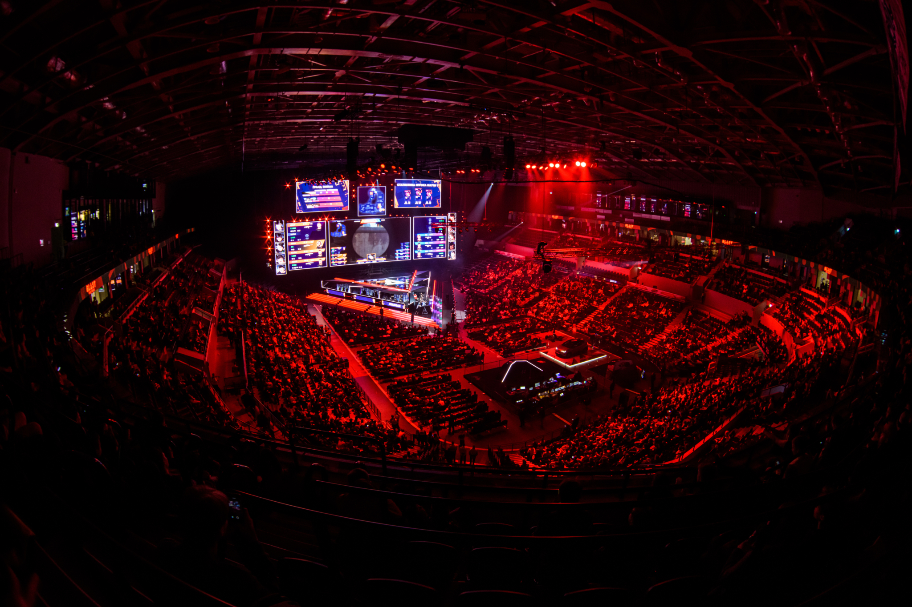
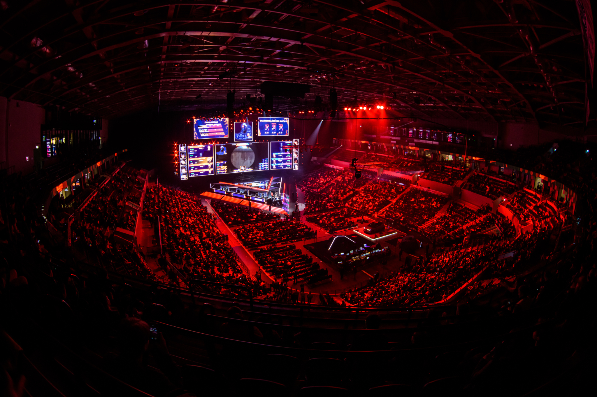
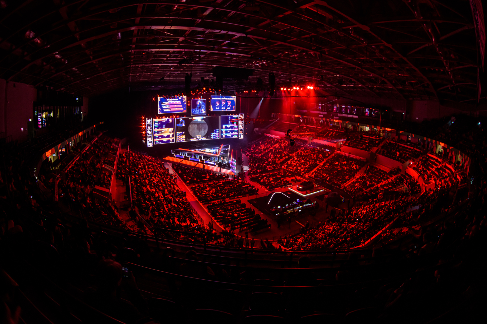
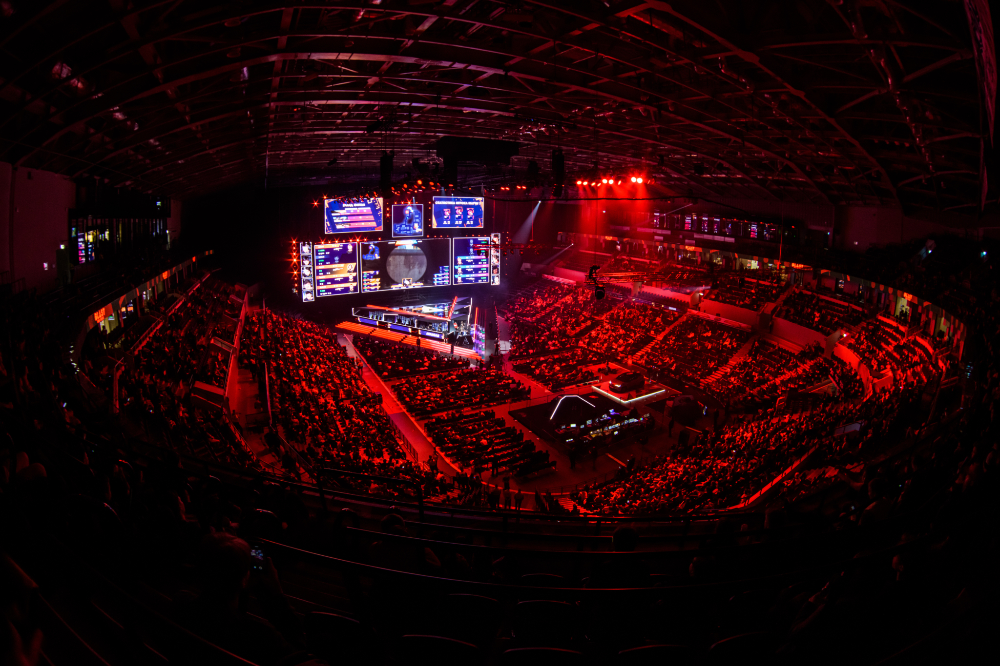

 

Ao longo das décadas, os eSports foram ganhando traços mais competitivos e deixaram de ser apenas jogos. Os eSports referem-se a competições de jogos eletrônicos e possuem quatro pilares principais: os jogadores, as empresas de games eletrônicos, as ligas e as plataformas de streaming.
Os eSports têm origem no início da década de 70, com a realização das “Olimpíadas Intergaláticas de Spacewar”, um dos primeiros jogos de computador. Oito anos mais tarde, em 1980, a Atari organizou o Space Invaders Championship. E posteriormente em 1990, foi criado o Nintendo World Championships, com diversas etapas em várias cidades dos EUA e com final na Califórnia.
Com a chegada da internet e banda larga nos anos seguintes, foi possível a realização de eventos online causando um boom na quantidade de competições entre os anos 2000 e 2010. No Brasil, as lan houses eram um fenômeno público nos anos 90. Como, a internet nesta época ainda era cara e não tinha uma boa qualidade, o serviço se tornou famoso por oferecer uma boa conexão e diversos jogos, tendo como maior destaque o CS 1.6. O sucesso foi tão grande, que passaram a realizar torneios de jogos eletrônicos, que cresceram, viraram um negócio lucrativo e ajudaram a impulsionar o desenvolvimento dos eSports dos anos 2000 em diante.
Com o crescimento dos eSports, começaram a surgir as organizações, que são parte fundamental dentro do cenário. Por trazer milhares de fãs e torcedores do mundo todo, além do poder monetário para fazer o cenário se alavancar e girar. Outro fator são os campeonatos que são extremamente estruturados e distribuem premiações milionárias, são assistidos por milhões de pessoas em todo o mundo, e com o crescimento do streaming foi ficando mais fácil para se acompanhar os campeonatos e consequentemente foi trazendo mais investimento para os campeonatos.
Além disso com a evolução e crescimento do cenário, as organizações passaram a investir mais em comissão técnica, psicólogos, massagistas, fisioterapeuta e preparadores físicos, tudo em uma infraestrutura de qualidade para seus jogadores.
Os pro players, como são chamados os jogadores profissionais, passam por um preparo físico e mental para participar das competições de games. Por isso, as organizações desenvolvem uma rotina de treinamento personalizada para as equipes. Esses treinamentos normalmente acontecem nas gaming houses, centros desenvolvidos especialmente para essa finalidade, e podem seguir uma rotina de oito a 12 horas diárias. Essas gaming houses oferecem toda a infraestrutura necessária para aprimorar as habilidades da equipe como equipamentos de qualidade, acompanhamento nutricional e psicológico.

Alguns dos jogos mais competidos nos últimos anos
É um MOBA desenvolvido e publicado pela Riot Games em 2009. Tornou-se um dos jogos mais populares do mundo. Sendo conhecido por sua complexidade estratégica, jogabilidade rápida e um elenco diversificado de 140 campeões. Além disso, tem uma cena competitiva forte, que atrai milhões de espectadores globalmente. O jogo também teve um impacto significativo no crescimento dos eSports e dascomunidades de jogos online.
É um jogo de tiro em primeira pessoa (FPS) desenvolvido inicialmente como um mod para Half-Life em 1999, mais tarde lançado como um título pela Valve. Se tornou um dos jogos mais influentes e jogados. Ele também é um pilar nos eSports, com uma alta comunidade e torneios internacionais que atraem milhões de espectadores e oferecem grandes prêmios em dinheiro.
É um jogo de tiro em primeira pessoa (FPS), desenvolvido e publicado pela Riot Games em junho de 2020. O jogo combina elementos de jogos de tiro clássicos com habilidades especiais únicas de personagens, conhecido por sua jogabilidade precisa, gráficos estilizados e pelo foco na estratégia e trabalho em equipe. Desde o seu lançamento, tem se tornado um dos principais no cenário de eSports, atraindo uma grande base de jogadores e competições internacionais.
É um battle royale desenvolvido pela Epic Games e lançado em 2017, que combina elementos de construção e sobrevivência. Com gráficos vibrantes e atualizações constantes incluindo novos modos de jogo, eventos e cosméticos, Fortnite se destaca por sua jogabilidade dinâmica e capacidade de manter sua base de jogadores engajada. Se tornou um fenômeno cultural, influenciando diversas áreas como música, cinema e moda, além de ser um dos jogos mais populares no cenário de eSports.
É um battle royale desenvolvido pela Respawn e publicado pela Electronic Arts em fevereiro de 2019. Combina elementos de tiro em primeira pessoa com mecânicas de habilidades e equipes de três jogadores, onde devem trabalhar juntos para serem os últimos sobrevivente em uma arena. O jogo é elogiado por seu ritmo acelerado, gráficos de alta qualidade e inovação dentro do gênero battle royale, conquistando rapidamente uma base de jogadores dedicada e se tornando um título popular nos eSports.
É uma franquia de jogos de luta desenvolvida e publicada pela Capcom, que estreou em 1987. Ganhou destaque mundialmente com o lançamento de seu segundo jogo em 1991. Conhecido por suas mecânicas de combate complexas e precisas, permite aos jogadores realizar movimentos especiais e combos através de comandos específicos. Se tornou um dos pilares dos jogos de luta, influenciando o desenvolvimento de outros jogos no gênero e mantendo uma presença significativa nos torneios de eSports.
Olá, me chamo Gustavo Aloe, tenho 23 anos e atualmente estou cursando Análise e Desenvolvimento de Sistemas pela SPTech. Gosto muito de jogar videogame, ouvir música e acompanhar diversas partidas dos campeonatos que gosto no meu tempo livre.
Bem, conheci os eSports na minha adolescencia, como sempre gostei muito de jogos e sempre joguei desde pequeno, principalmente FPS, quando descobri que existiam campeonatos que eram transmitidos e que eu poderia assistir os melhores jogadores, comecei a acompanhar e a me interessar ainda mais.